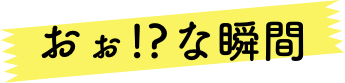
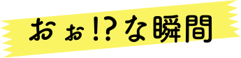

大きな幸せ
教えてくれた
小さなあなたが
「野良猫」から「家族」へ。
「人間」との新しい生活の始まり。
ある日、近所の庭に現れた「小さな子猫」
「小さいのに1人で…」と牛乳をあげたのをきっかけに
少しずつ距離を縮めて「家族」になり「我が家の弟」になりました。
今年で５年目になります。
「うり」の由来は、初めて出会った時、目がクリクリしていて
クリより響き的に「うり」が可愛い！という私の偏見で決まりました笑
しかし、家族の前では、気性が荒く、暴れん坊将軍！
知らない人の前ではとっても臆病…
誰に似たのかしら…
ある日、近所の庭に現れた「小さな子猫」
「小さいのに1人で…」と牛乳をあげたのをきっかけに
少しずつ距離を縮めて
「家族」になり「我が家の弟」になりました。
今年で５年目になります。
「うり」の由来は、初めて出会った時、
目がクリクリしていて
クリより響き的に「うり」が可愛い！
という私の偏見で決まりました笑
しかし、家族の前では、気性が荒く、暴れん坊将軍！
知らない人の前ではとっても臆病…
誰に似たのかしら…
 

「野生は忘れたの…？」「あれ？人間だっけ…？」
と思うようなポーズをする時があります。
なに…！？
聞き慣れない音に警戒中。
座り方、人間かな？
いや、人間でもやらない。
あああああ！！
大あくびの瞬間を激写！
意外と口大きんだなって…
姉ちゃんビックリよ。
あ…生きてます…
野生を忘れたねこの姿
お腹を出して寝るのは
当たり前になってます。


今も可愛いけど、昔もかわいい！
昔もかわいいけど、今も可愛い！
「ねこ」って、何なの？
噂じゃ「水」だとか・・・
「ねこ」って何なのでしょうか。
可愛くて、モフモフで、可愛くて可愛くて・・・
ねこを作り出した神様は本当に天才的だと思います。
ねこは、ツンデレや人間に興味がない。という人もいます。
ですが、人間と同じで1人1人性格も違います。
ずーっと一緒に居れば、表情も人間のように変わります。
確かにベタベタし過ぎると怒り出すし、放っておくと
ベタベタしてくるしツンデレです。
そんな所も魅力に変えてしまう、それがねこだと思います。
「ねこ」って何なのでしょうか。
可愛くて、モフモフで、可愛くて可愛くて・・・
ねこを作り出した神様は本当に天才的だと思います。
ねこは、ツンデレや人間に興味がない。
という人もいます。
ですが、人間と同じで1人1人性格も違います。
ずーっと一緒に居れば、
表情も人間のように変わります。
確かにベタベタし過ぎると怒り出すし、
放っておくとベタベタしてくるしツンデレです。
そんな所も魅力に変えてしまう、
それがねこだと思います。
「家族」としてできること。
「姉」としてできること。
うりと家族になって５年目。
沢山引っ掻かれたし、沢山噛まれたし、沢山喧嘩もしました。
これからも、変わらず沢山の愛情を注いでいきたいと思います。
そして、今以上の信頼関係を築いて最期まで同じ時を
精一杯生きていきたいと思います。
うりと家族になって５年目。
沢山引っ掻かれたし、沢山噛まれたし、
沢山喧嘩もしました。
これからも、変わらず沢山の愛情を
注いでいきたいと思います。
そして、今以上の信頼関係を築いて
最期まで同じ時を精一杯
生きていきたいと思います。